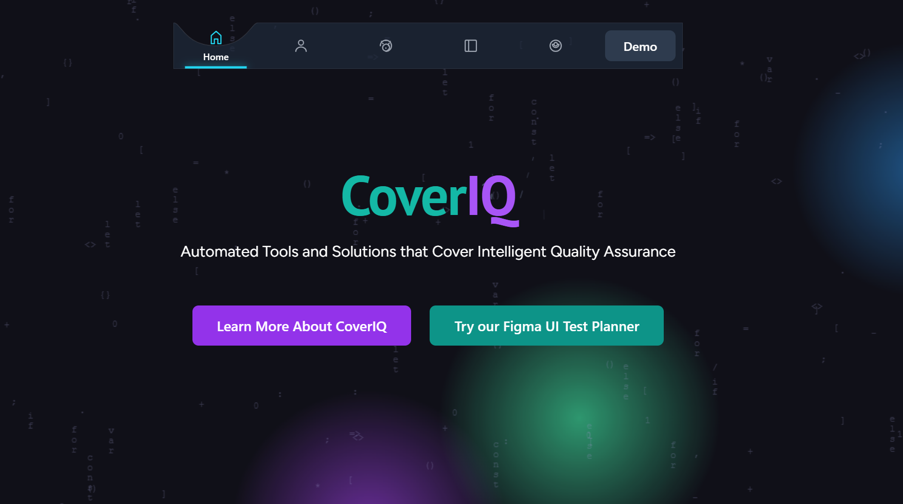
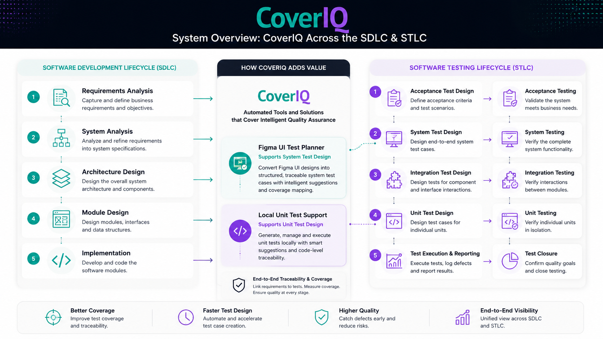
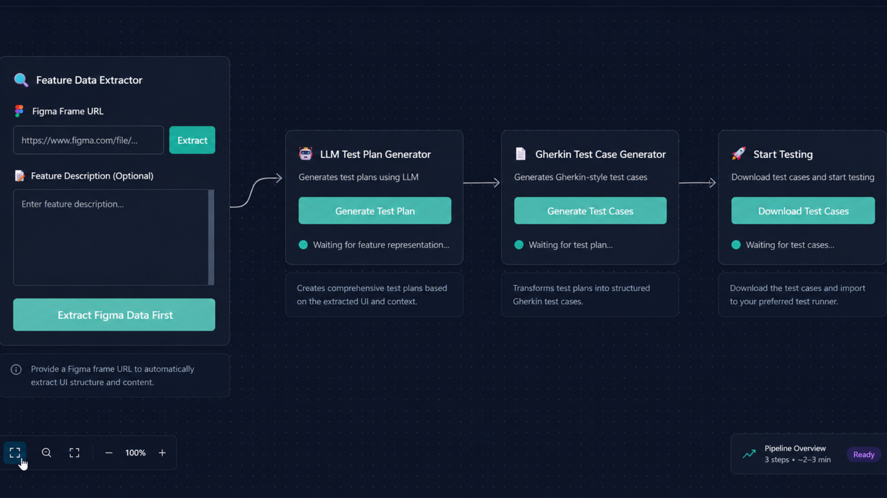
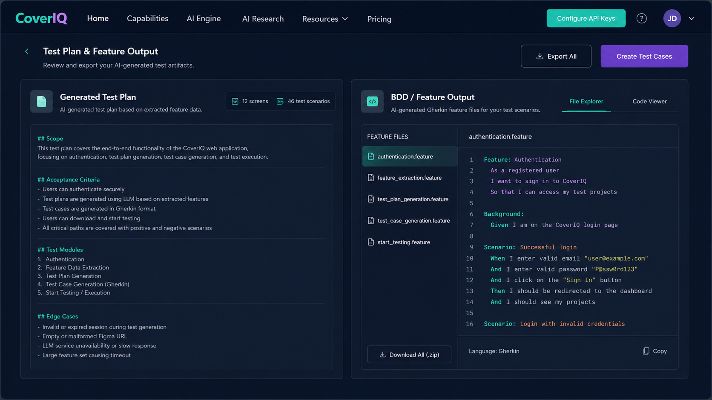
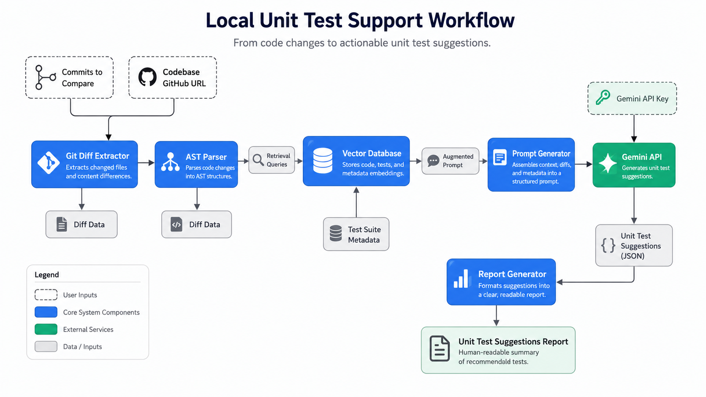
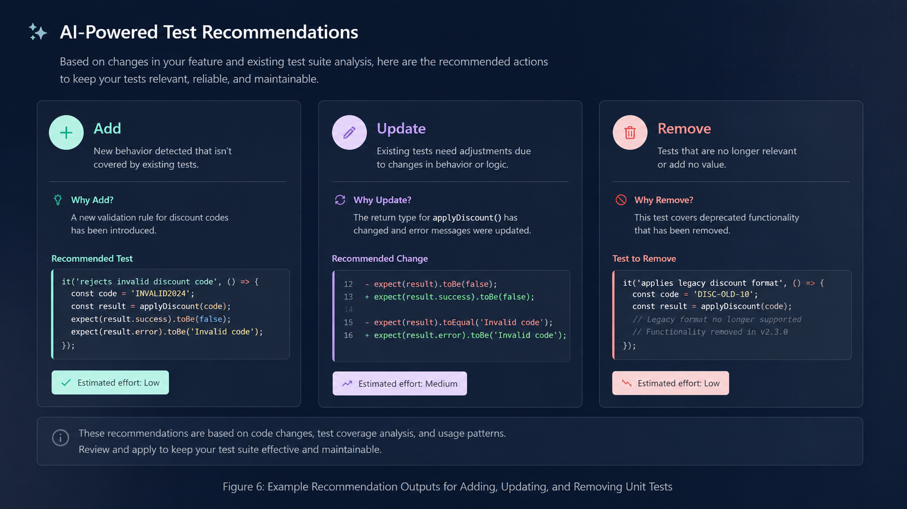
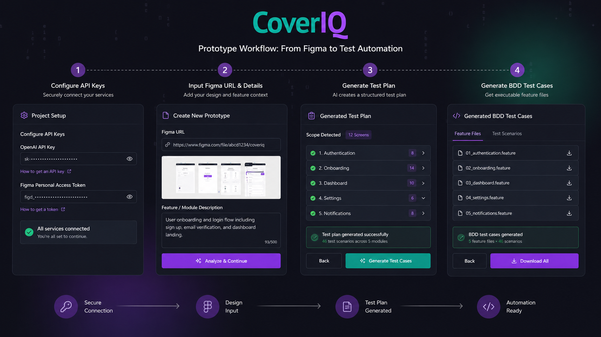

CoverIQ
An AI-powered software testing assistant that turns Figma UI flows, feature descriptions, and code changes into actionable QA plans, BDD test cases, and unit-test maintenance reports.

Overview
CoverIQ is an AI-powered testing assistant designed for software development and QA teams working under increasingly compressed development cycles. While modern software teams have accelerated the SDLC through agile development, CI/CD, and rapid iteration, the testing lifecycle still often depends on manual judgment, fragmented communication, and high maintenance effort.
The project focuses on two moments where testing work becomes especially slow: the early stage, where QA teams need to translate UI/UX designs into reliable test plans, and the later maintenance stage, where developers need to keep unit tests aligned with changing code.
CoverIQ proposes a practical AI workflow for both. The platform includes a Figma UI Test Planner for generating test plans and BDD-style scenarios from design files, and a Local Unit Test Support module for recommending unit-test additions, updates, and removals based on code changes.
Problem
Testing has become the bottleneck between fast design changes and reliable release cycles.
In fast-moving software teams, UI flows are redesigned, features are renamed, and edge cases appear before QA teams can fully document them. Test planning still relies heavily on manual interpretation: someone needs to inspect the Figma file, understand the feature logic, define acceptance criteria, and then convert the flow into readable test cases.
At the same time, unit tests become expensive to maintain after every code change. A small refactor can require multiple test files to be checked, updated, or removed. Without structured support, teams risk stale tests, missing coverage, or unnecessary regression-test overhead.
Design challenge
How might we turn design intent and code change into structured testing decisions, without asking QA engineers and developers to manually reconstruct the whole context every time?
Product strategy
Two AI modules, one shared testing workflow.
Figma UI Test Planner
A web-based GUI that accepts a Figma frame URL and natural-language feature description, then generates a QA test plan, BDD-style test cases, and Gherkin .feature output.
Local Unit Test Support
A local testing-support framework that analyzes git diff, AST structure, and related code context to recommend which unit tests should be added, updated, or removed.
Instead of positioning AI as a black-box code generator, CoverIQ treats AI as a testing collaborator. The system does not replace QA judgment; it creates a structured first draft that teams can review, revise, and connect to their existing testing process.

Key outcomes
A prototype that connects visual design, natural language, and code-level testing decisions.
UI planning + unit-test maintenance
Appier, GoFreight, Tomofun
Add, update, remove
Early prototype demonstrations were shared with senior QA engineers and SDETs from Appier, GoFreight, and Tomofun. Their feedback confirmed that test planning and test-script maintenance occupy a significant portion of current software workflows, and that there is market need for AI tools that can be integrated into real testing processes rather than remaining as generic coding assistants.
Module 1
Figma UI Test Planner: from interface design to testable behavior.
The Figma UI Test Planner begins from the design side of software testing. Instead of waiting until implementation is complete, the system reads UI structure and interaction logic directly from Figma, then combines that information with a natural-language feature description.
The result is a structured testing artifact: a high-level test plan, acceptance criteria, positive and negative BDD scenarios, and a downloadable Gherkin .feature file that can support future E2E automation.
Input Figma URL and feature description
The user provides a specific Figma frame URL and describes the intended behavior of the feature in natural language.
Extract UI elements and interactions
The system uses the Figma API to retrieve frame data, including buttons, input fields, links, and interaction settings.
Structure the design information
Decorative elements are filtered out, while test-relevant components are converted into structured JSON for model input.
Generate the QA test plan
An LLM generates testing objectives, coverage scope, acceptance criteria, and edge-case considerations.
Export BDD scenarios and .feature files
The test plan is transformed into positive and negative Gherkin scenarios that are readable for QA and reusable for automation.


Module 2
Local Unit Test Support: from code change to test maintenance decisions.
The Local Unit Test Support module focuses on a different testing pain point: regression-test maintenance. When code changes, developers need to understand which tests are now missing, outdated, or no longer necessary. CoverIQ approaches this through a local-first workflow that combines git diff, AST static analysis, vector retrieval, and LLM reasoning.
Rather than simply generating new test code, the module outputs a decision-support report. It identifies affected functions, retrieves relevant test context, and classifies recommendations into add, update, and remove actions.
Capture code changes
The system uses git diff to identify added, modified, and deleted functions, classes, parameters, and API calls.
Parse structural dependencies
Python AST analysis maps affected functions, call relationships, imports, and potential testing impact.
Retrieve related context
A vector database retrieves semantically related code and historical test snippets to enrich the model prompt.
Generate structured recommendations
Gemini API receives the augmented prompt and returns JSON-formatted test maintenance suggestions.
Output developer-readable report
Recommendations are converted into Markdown, including affected-function summaries, risk notes, and draft code snippets.


System design
A structured AI pipeline, not a one-shot prompt.
CoverIQ was designed around structured intermediate artifacts. Both modules convert messy inputs into stable formats before involving the LLM: Figma elements become structured UI JSON, and code changes become AST-informed change summaries with retrieved context. This makes the generated result easier to inspect, debug, and improve.
The key design decision was to make the AI output reviewable. Test plans are exported as Markdown, BDD cases are exported as .feature files, and unit-test recommendations are exported as Markdown reports with JSON-backed reasoning. This keeps the workflow compatible with human review and existing engineering tools.
Why structured JSON?
JSON creates a stable bridge between UI extraction, model generation, and report formatting. It prevents the workflow from depending only on free-form text.
Why Markdown and .feature output?
Markdown supports readable team review, while Gherkin .feature files allow generated scenarios to move closer to automated E2E testing.
Prototype workflow
From setup to testing output.
In the prototype, the user begins by configuring API keys, then provides the Figma URL and feature information. The system generates a test plan first, allowing the user to review coverage and intent before generating BDD-style cases.
This staged workflow was intentional. Instead of producing final test scripts immediately, the interface lets users move from design context to test plan, then from test plan to executable testing artifacts. This mirrors the way QA work is often reviewed in teams.

Market position
CoverIQ sits between testing coverage tools, AI coding assistants, and QA planning workflows.
Existing tools often focus on one side of the testing problem. Codecov emphasizes coverage reporting. Diffblue Cover focuses on automated Java unit-test generation. Launchable supports test prioritization and flaky-test prediction. Codium AI supports AI-assisted unit-test generation across languages and IDEs.
CoverIQ differentiates itself by connecting two under-supported areas: design-stage UI test planning and change-aware unit-test maintenance. The project does not only ask, “Can AI generate tests?” It asks, “Can AI help teams understand what should be tested, why it matters, and how the testing artifact should change as the product changes?”
Reflection
The most important design problem was trust.
AI testing tools can easily feel impressive but unreliable. For CoverIQ, the interface needed to show enough reasoning structure for QA engineers and developers to evaluate the result. That meant designing around traceable inputs, readable intermediate reports, and output formats that fit into existing workflows.
The project also clarified a broader product-design lesson: in technical AI tools, usability is not only about making the interface simple. It is about making the system’s reasoning legible enough that expert users can decide whether to trust it.
Next steps
Moving from assistant to integrated testing workflow.
The next step for the Figma UI Test Planner is to move from BDD .feature generation toward automated E2E test-code generation. The next step for Local Unit Test Support is to package the workflow into an IDE extension, such as a VS Code extension, so developers can receive test-maintenance recommendations closer to where code changes happen.
Future development could also expand the RAG system to support coverage analysis, unit-test result analysis, and richer debugging workflows, turning CoverIQ from a testing-output generator into a broader QA decision-support platform.
Built with
Links
Demo video: CoverIQ Demo ↗
GitHub — Figma UI Test Planner: View branch ↗
GitHub — Local Unit Test Support: View branch ↗
- Project
- CoverIQ — AI Powered Software Testing Solutions
- Competition context
- 3rd place in 2025 TCSE Software Engineering Competition
- Core modules
- Figma UI Test Planner; Local Unit Test Support
- Output formats
- Markdown test plans, BDD-style test-case reports, Gherkin .feature files, JSON-backed unit-test maintenance reports